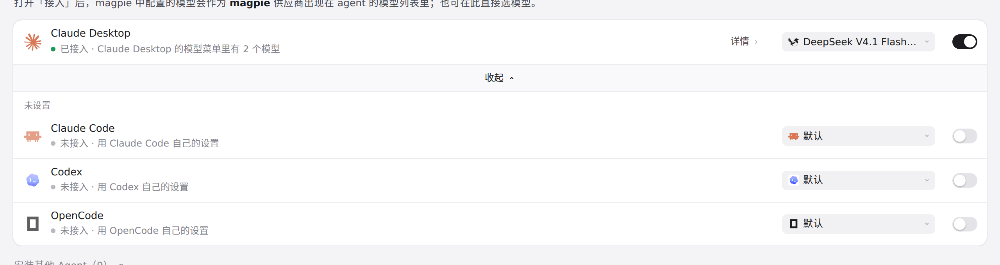
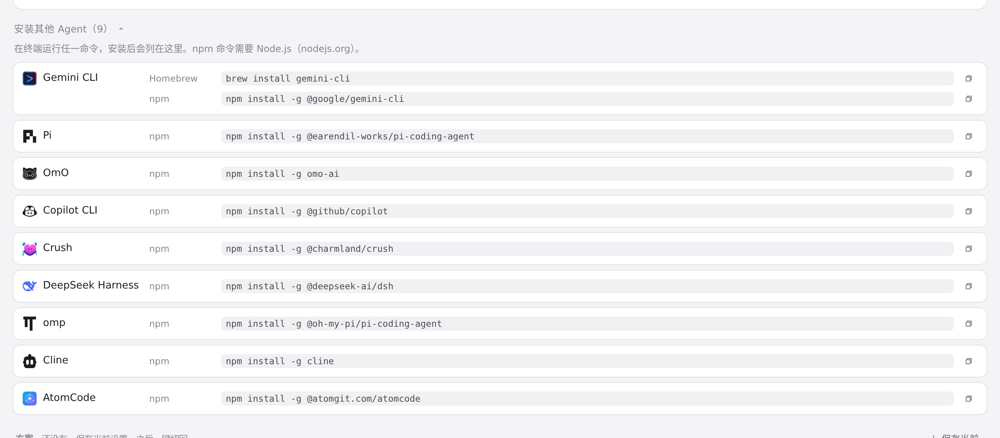
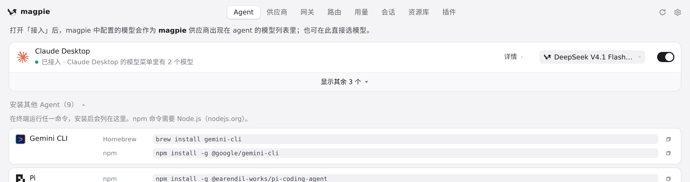
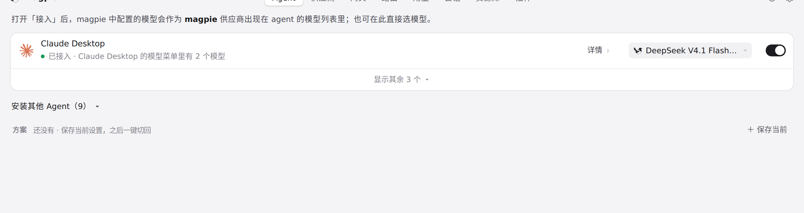

#827 界面预览
commit 1155c3b · 回到 PR · 这个 PR 把 Aside「接入 magpie 提供方」和「选模型」在界面上拆成两件事：Agent 行/详情会显示 Aside 的运行状态和单个字段的说明，读取不到运行时会弹出「保存供下次启动使用」的确认，断开前先用纯计划做还原预览并且预览失败就禁止断开，同时补了中/日/德文案。
红线是鼠标走过的轨迹，红色圆环是一次点击；底部文字是这一步在做什么。空格暂停，← → 逐段查看。

Agent 列表里的 Aside 行 · 展开后的 Agent 列表
 Agent 列表里的 Aside 行 · 展开后的 Agent 列表：本机已安装的 Agent
Agent 列表里的 Aside 行 · 展开后的 Agent 列表：本机已安装的 Agent

Agent 列表里的 Aside 行 · 可安装的 Agent 列表

接入开关与断开预览 · Agent 列表：沙盒里没有已安装的 Aside，只能看到这些行

接入开关与断开预览 · 安装其他 Agent 的列表里也没有 Aside